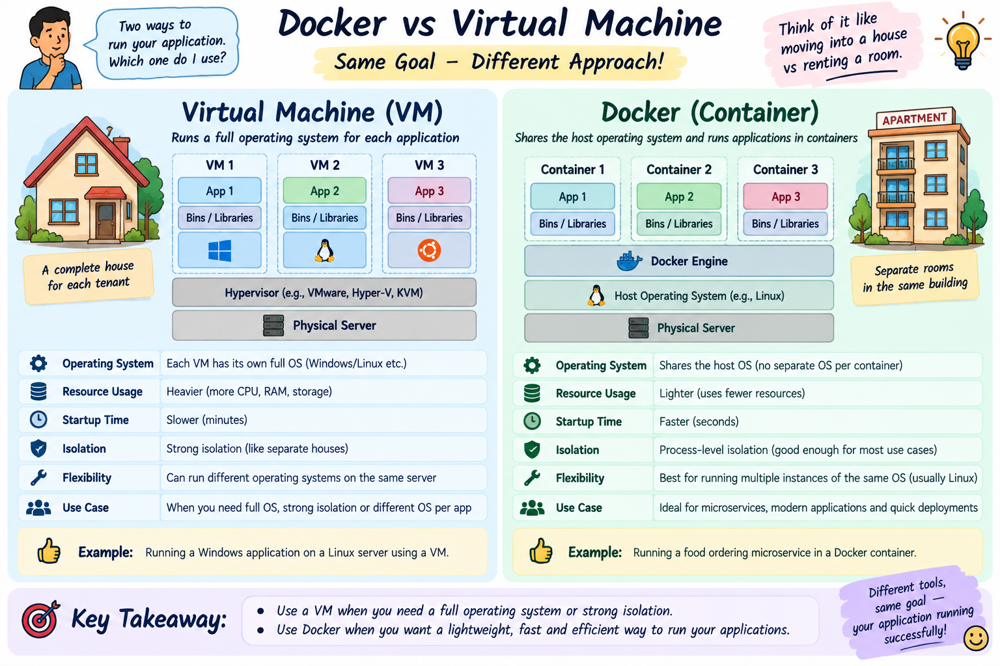

Introduction to Docker & Containers
Learn why Docker revolutionized software engineering by solving the notorious "It works on my machine!" problem once and for all.
What Problem is Docker Solving?
The real-world nightmare software engineers faced before containers existed.
❌ The Problem: "It Works on My Machine!" Syndrome
In traditional software development, a developer builds an application on their laptop (e.g. Mac OS + Node v18 + PostgreSQL 15). But when deployed to the QA server or Production (Ubuntu Linux + Node v16 + PostgreSQL 12), the application CRASHES due to mismatched versions, missing libraries, or OS environment differences!
DevOps Lead: "Well, we can't ship your laptop to the customer!" 😅
✅ The Solution: Docker Containers
Docker packages the Application Code + Exact Runtime (Node.js/Java) + System Libraries + Config Files into a single lightweight, self-contained unit called a Container.
🎯 Guarantee: If it runs inside a Docker container on your laptop, it is 100% guaranteed to run identically on your teammate's PC, testing server, or AWS Cloud!
Core Docker Key Terms Explained Simply
All 6 core Docker terms connected through one unified, real-world story!
To help you easily co-relate how all Docker concepts fit together, every term below uses the exact same Pizza Restaurant story!
1. Dockerfile
A text file containing step-by-step instructions on how to build a Docker image (e.g. FROM node:18, COPY . ., RUN npm install).
2. Docker Image
A frozen, immutable snapshot built from a Dockerfile. It contains your code and all dependencies ready to run.
3. Docker Container
A live, running process created from a Docker Image. You can start, stop, pause, or destroy containers in seconds.
4. Docker Hub
An online app store/repository hosting millions of pre-built public images (e.g. Official PostgreSQL, Redis, NGINX images).
5. Docker Engine / Daemon
The background manager service running on your host computer that builds, runs, and manages your containers.
6. Docker Volume
A folder on your host machine linked to a container so database files stay safe even if the container is destroyed!
Docker Containers vs. Virtual Machines (VMs)
Why Docker containers boot in milliseconds while VMs take minutes!
Virtual Machine (VM) Stack
Heavyweight: Every VM carries a full Guest OS (Windows/Linux)!
Docker Container Stack
Lightweight: Containers share the Host OS Kernel directly!
Visual Architecture Diagram: Virtual Machines vs Docker Containers
High-level visual architecture comparing Hypervisor-based Guest OS isolation versus Docker Engine shared kernel containerization.

📋 Quick Feature Comparison Table
| Feature | Virtual Machines (VMs) | Docker Containers |
|---|---|---|
| Guest OS Requirement | Requires a FULL Guest OS for every VM | NO Guest OS! Shares Host OS Kernel |
| Size on Disk | Heavy: Gigabytes (GBs) | Lightweight: Megabytes (MBs) |
| Bootup Time | Slow: Minutes (boots entire OS) | Ultra Fast: Milliseconds / Seconds |
| Resource Utilization | High RAM & CPU overhead | Near Zero CPU/RAM overhead |
| Isolation | Complete hardware-level isolation | Process-level isolation (Namespace/Cgroups) |
Real-World Analogies for Freshers
🏡 Analogy 1: Independent House (VM) vs. Apartment (Container)
• Virtual Machine = Independent House: Has its own separate land, foundation, plumbing, security guard, and power generator (Guest OS). Expensive and huge.
• Docker Container = Apartment Room: Shares the main building's foundation, elevator, and main water pipe (Host OS Kernel), but has your own private locked door and room! (Efficient & cheap).
🚢 Analogy 2: 1950s Ocean Shipping Containers
Before 1956, cargo ships loaded loose sacks of spices, barrels of oil, and wooden crates of apples separately. Loading took days!
Then standard Intermodal Shipping Containers were invented. Now, no matter what's inside (cars, bananas, electronics), the outer steel container fits onto ANY ship, train, or truck seamlessly! (That's why Docker's logo is a Whale carrying shipping containers!).
Interactive Docker CLI Command Simulator
Click the core Docker CLI buttons below to see how Docker commands build, run, and manage containers in real-time!